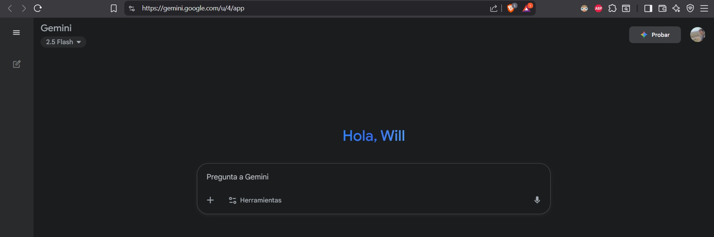
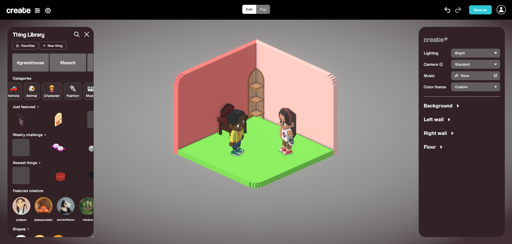
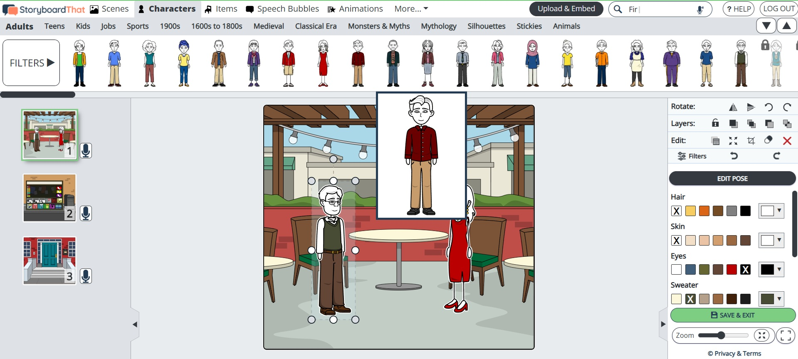

More ideas to apply AI in the Language classroom
Thoughout the year, we have analyzed the impact of AI on the language classroom. We covered some tools (non-AI and AI-based), some of the benefits and drawbacks, and examples of how to actually use them in lesson plans. Further below, you will find a compilation of more Digital Tools/Apps, alongside a description of them, model tasks that can be done with them, and some examples of how they can be used in the classroom.
Gemini:
| Description | How to use | Model Task |
|---|---|---|
| Gemini is a Generative AI tool used to function as an intelligent assistant. It excels at customized linguistic interaction, content generation (text, audio, media), and real-time analysis. Uses for ELT are many, ranging from the creation of fictional scienarios with custom characters, to the analysis of different contextualized grammar points within class-debated texts. | Once you are logged in, provide a clear, specific, and detailed instruction (prompt) outlining the task, the target linguistic focus (e.g., coherence, grammar), and the desired output format (e.g., list, essay, score). Input the text to be analyzed or the script for the role-play, and the tool will generate its customized output. You have the option of attaching images, presentations, files, or other media into your prompt that the AI can process as well. | AI-Assisted Rhetorical Feedback Cycle Instructions: 1. Draft: Draft a 500-word argumentative essay on the assigned topic. 2. Analyze: Submit your draft to Gemini using the teacher-provided, rubric-aligned prompt (the "Academic Editor" persona), if one's provided. 3. Reflect: Based on the AI's analysis, create a formal Revision Plan. In this plan, you must justify why you accepted, modified, or rejected each of the AI's three revision suggestions. 4. Revise & Submit: Implement your justified revisions and submit the final essay and the Revision Plan to the teacher. |
This task aligns with the Deepen (L2) level, coined by the UNESCO CFT (2024), by requiring the student (facilitated by the teacher) to Interpret data from AI learning platforms to identify student needs and tailor instruction. The focus is on the teacher using AI-generated insights (feedback) to refine the assessment process and develop students' critical reflection skills, upholding human accountability.
Rooms.xyz:
| Description | How to use | Model Task |
|---|---|---|
| Rooms.xyz allows users to create, browse, and interact with user-generated 3D virtual spaces. Some of the main features for ELT include the ability to animate objects, add custom cameras, and, most critically, add synthesized speech to characters (NPCs) to drive realistic, situated dialogue. | Once you access the website you can the editor to add and manipulate 3D objects ('things'). To create dialogue for a Non-Player Character (NPC), place the character and use the 'Tell Stories' or 'Animate' features to input the desired script. For custom speech, you should select a voice profile (e.g., accent, tone) from the synthesized speech options to deliver the lines when a user triggers an action (for example, when entering a place or clicking an object). | A 3D Communicative Scenario Design (3-4 members): 1. Scenario Selection: Select a high-density scenario with many conversational outlines. 2. Environment Design: sing rooms.xyz, collaboratively design and build a 3D virtual environment that realistically contextualizes the scenario. 3. NPC Scripting: Script the dialogue for all key Non-Player Characters, and use the platform's synthesized speech feature to record the lines. 4. Objective Definition: Define the objective that a user (another student) must achieve to successfully complete the "room". |
This task aligns with the highest level, Create (L3), of the UNESCO CFT (2024) because it moves beyond using an existing tool to Designing and managing AI-enhanced learning environments. Students are not just consuming content; they are acting as pedagogical engineers, designing complex virtual systems that leverage AI features (synthesized speech, configurable actions) to foster critical AI competencies
Storyboard That:
| Description | How to use | Model Task |
|---|---|---|
| StoryboardThat is an online tool for creating digital storyboards and comic strips using an extensive library of scenes, characters, and props. It is useful for creating resources like visual vocabulary posters, worksheets, and dialogue-focused narratives. The tool supports multimodal composition, allowing users to record audio directly into each cell. | Open the Storyboard Creator and choose a layout. Once opened, you can drag and drop visual assets such as scenes, characters, and props from the library into the chosen cells to create a visual sequence. If you'd like to add an oral element, use the integrated feature to record audio cell-by-cell, connecting the written dialogue to spoken pronunciation and intonation. | Creating a narrative retelling - students'll need a source material (such as a short story) assigned by the teacher. 1. Design Requirements: Create a digital comic strip using StoryboardThat with 6 to 8 panels. 2. Linguistic Focus: requirements for the strip are: a minimum of eight new vocabulary words; three distinct temporal transitional phrases (e.g., meanwhile, shortly after) used as narration; and direct speech dialogue in at least three panels. 3. Multimodal Integration: with the help of the integrated feature to record your voice, read the dialogue in those three panels focusing on clear pronunciation and intonation. |
This task requires the teacher to identify, select, and use a common digital tool to support content creation, learning, and assessment. It aligns with the foundational Acquire (L1) level of competency from the UNESCO CFT, focusing on leveraging basic AI/digital tools (like the visual editor and audio recording feature) to generate or facilitate engaging teaching materials and structured content creation.
References
- UNESCO. (2024). AI competency framework for teachers. United Nations Educational, Scientific and Cultural Organization.
- Google for Education. (n.d.). Transform teaching and learning with Gemini for Education. Retrieved from https://edu.google.com/ai/gemini-for-education/
- Clever Prototypes, LLC. (n.d.). Teacher Resources. Retrieved from https://www.storyboardthat.com/articles/education/teacher-resources